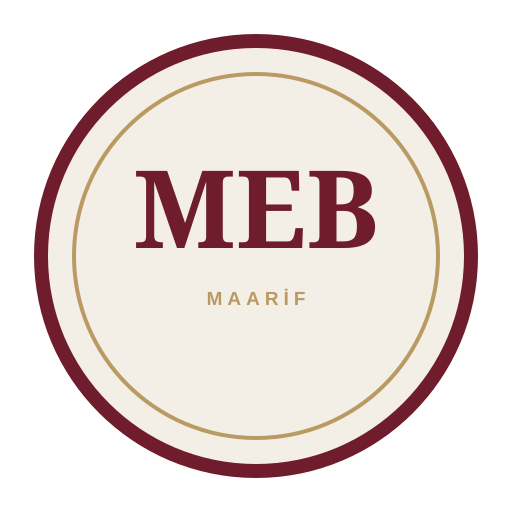

Başlangıç
Ünite, konu ve kazanım planlaması için alan.

Planı, fikri ve öğretmen hafızasını tek bir zarif masaüstünde birleştiren kişisel felsefe günlüğü.
“Sorgulanmamış hayat, yaşanmaya değmez.”
Bilgelik, neyi bilmediğini bilmektir.
— SokratesÖğretim yılının bütününü tek bakışta görün.
Ünite, konu ve kazanım planlaması için alan.
Hafta hafta ders akışı ve notlar.
Yıllık devam planı ve değerlendirme.
Her ders için kısa, kullanışlı ve arşivlenebilir planlar.
Öğrenciyi araştırmaya, düşünmeye ve üretmeye yönelten çalışmalar.
Öğrenci seçtiği filozofun bir gününü, düşünce dünyasına uygun biçimde yazar.
Bir kavramın tarihsel değişimini kısa örneklerle izler.
Günlük bir sorunu iki farklı filozofun yaklaşımıyla yorumlar.
Sınıfı düşünme alanına çeviren kısa uygulamalar.
Öğrenci rastgele verilen bir görüşü bir dakika savunur.
Bir öğrenci filozofu canlandırır, sınıf sorular sorar.
Ahlaki ikilemler küçük gruplarda gerekçeleriyle tartışılır.
Takvimdeki özel günleri felsefi temalarla ilişkilendirin.
Barış, savaş, adalet ve insan doğası üzerine tartışma.
Hak, özgürlük, eşitlik ve sorumluluk.
Okul çapında felsefe etkinliği ve öğrenci forumu.
Bu alan yalnızca size ait. Yazdıklarınız bu cihazda saklanır.
Bir ders bazen planlandığı gibi değil, ihtiyaç duyulduğu gibi ilerler.
Henüz kaydedilmedi.